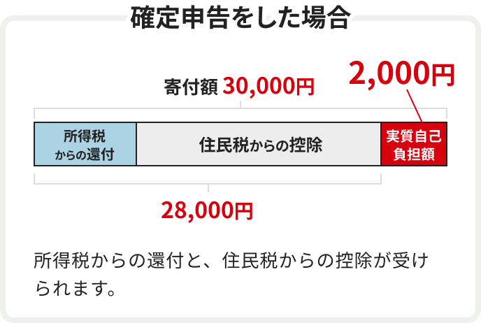

協力企業
ふるさと納税で簡単1,000円～
このプロジェクトに寄付する秋田県立大学「CsP（キャップストーンプロジェクト）」
机上の学びから、現場のイノベーションを
秋田県立大学CsP
学びの先には、教科書だけでは出会えない問いがあります。
社会や地域には、まだ答えの定まっていない課題が数多く存在しています。
CsP（キャップストーンプロジェクト）は、秋田県立大学で学んできた専門知識や技術を生かし、
学生がチームで一つの課題に取り組む実践的な教育プログラムです。
テーマの設定から調査、試作、検証、発表までを自ら考え、主体的に進めていきます。
正解のない課題に向き合う中で、試行錯誤や対話を重ねることは簡単ではありません。
しかし、その過程こそが、考える力や協働する力を育てます。
学生一人ひとりの「夢中」を出発点に、学びを社会へとつなげていく場です。
プロジェクトの詳細を見る
キャップストーン（CsP）は、
1・2年次で身につけた基礎科目の学びを土台に、
3年次の専門科目で育てた応用力を統合し、
実社会の課題に挑む、本学独自の実践プロジェクトです。
企業や自治体が抱えるリアルな課題に、
学生がチームで調査・分析・提案を行い、
“学んだ知識を現場で使える力”へとつなげる、
学修の集大成に位置づけられています。
私たちのCsP!
ー本荘キャンパス編ー
秋田県立大学システム科学技術学部には、
現代社会を支える技術と仕組みを多角的に学ぶための、
5つの学科があります。
それぞれの学科が専門性を持ちながら連携し、
分野を越えた学びを通して社会課題に向き合っています。
- 情報工学科
- 機械工学科
- 経営システム学科
- 建築環境システム学科
- 知能メカトロニクス学科
5つの学科で広がる、学びのフィールド
ー 数字から見える、学びと実践 ー
5つの学科は、それぞれ異なる専門分野を持ちながら、
共通して「社会課題に向き合う力」を育むことを目指しています。
各学科で学ぶ内容や経験はさまざまですが、
学びをどのように実践へとつなげているのかには違いがあります。
ここからは、その中でも情報工学科に着目し、
学生の学びの現状をアンケート結果から見ていきます。

- 地元の方でも自分の住んでいる自治体に寄付を行い、控除を受けられます。
- 1000円から簡単に寄付を行うことが可能です。


-
ステップ01
アカウント登録 / ログインする
-
ステップ02
寄付したいプロジェクトを選ぶ
-
 ステップ03
ステップ03寄付の申し込み手続きを行い、入金する
※クレジットカードでのご入金となります。 -
ステップ04
自治体から確定申告に必要な「寄付金受領証明書」が届く
-
 ステップ05
ステップ05「寄付金受領証明書」を添付して確定申告を行う
※ワンストップ特例制度を利用する場合、確定申告は不要です。

SCSKのふるさと納税は、一般的なふるさと納税と同様に、寄付をすることで税金の控除が受けられます。寄付額のうち2,000円を自己負担とし、残りが所得税や住民税から控除されます。控除額の上限は収入や家族構成によって異なります。


ふるさと納税の詳しい内容については総務省のHPをご確認ください。
- 札幌市に住んでいますが、寄付しても税金控除の対象になりますか？
-
はい、札幌市在住の方でも控除の対象となります。
SCSKのふるさと納税は、一般的なふるさと納税と同様に、自治体に寄付することで所得税や住民税の控除を受けることができます。
- 返礼品はありますか？
-
こちらのプロジェクトでは返礼品の用意はありません。
その代わり、より多くの寄付金が、あなたの応援したいプロジェクトに活用されます。
- 寄付後に必要な手続きや書類はありますか？
-
寄付後に自治体から「寄付金受領証明書」が届きます。
この証明書をもとに確定申告を行うことで、税金控除を受けることができます。確定申告が不要な「ワンストップ特例制度」も利用可能ですので、ご希望に合わせてお選びください。
- 1,000円の寄付でも税金控除を受けられますか？
-
札幌市へのふるさと納税は1,000円から可能ですが、税金控除の対象は年間の寄付額のうち2,000円を超える部分となります。
このため、税金控除を受けるには年間2,000円を超える寄付が必要です。
- 支払い方法を教えてください。
-
クレジットカードでのご入金となります。
-
①寄付の納付日
クレジットカード支払いでは、「決済完了メール内に記載されている受付および決済手続きが完了した日」が寄付の納付日になります。 -
②クレジットカードの名義
寄付者本人のクレジットカードを使用してください。名義が異なる場合、寄付金受領証明書が無効になる可能性があります。 -
③決済できない場合
-
(1)よくある質問をご確認ください。エラーが表示された場合
- ・クレジットカードの有効期限をご確認ください
- ・クレジットカード番号、セキュリティコード等が正しく入力できているかご確認ください
- ・上記で解決しない場合、クレジットカード会社にご連絡ください
- (2)もう一度実行してください。エラーが表示された場合、再度寄付を行ってください
- (3)予期せぬエラー。エラーが表示された場合、お問い合わせページでご連絡ください
-
(1)よくある質問をご確認ください。エラーが表示された場合
-
④支払いをキャンセルしたい場合
入金済みの場合、原則キャンセルできません。キャンセルを受け付けていない自治体があります。
申し込み前の確認事項にキャンセルや申込内容の変更ができないと記載し、お知らせを確認し『申し込み前の確認事項に同意する』にチェックを入れると、寄付が完了します。確認・判断して頂いた上で申し込みを完了しているため、ご理解ください。特別な事情がある場合は、直接自治体へご連絡・ご相談ください。
-
①寄付の納付日
ふるさと納税で簡単1,000円～
このプロジェクトに寄付する